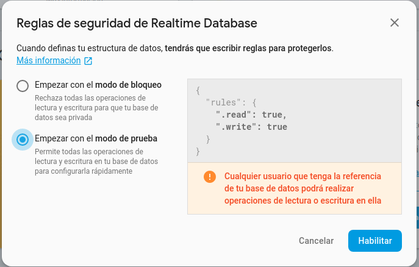

4.2 - Creació d'una aplicació
La Base de Dades, que hem quedat que poden ser un document únic JSON en el cas de Realtime Database, i tot un conjunt en el cas de Cloud Firestore, està associada a una aplicació. Crearem des de l'entorn de Firebase una nova aplicació, la referència de la qual és la que utilitzarem en l'aplicació web o aplicació mòbil. Així doncs, podem crear-nos unes quantes aplicacions Firebase, i en cadascuna guardarem una Base de Dades. Ens farà falta autenticar-nos amb un compte de Google.
El procés de creació el farem des de l'entorn de firebase: www.firebase.com.
El següent vídeo mostra el procés de creació d'una aplicació:
Regles de seguretat
Inicialment triarem l'opció modo de prueba , en el qual tot el món pot accedir a les dades. Evidentment no es poden deixar aquestes regles de forma definitiva, però per a començar a provar, està bé. De fet, en l'última versió ho deixarà en mode de prova durant un mes. De tota manera, si ho vulguérem allargar, aniríem a la configuració dels rules

4.2.1 Utilització des de IntelliJ
Mirarem l'accés des de IntelliJ, que és l'entorn que utilitzem en el present mòdul.
Per desenvolupar una aplicació a IntelliJ amb Kotlin que acceda a Firebase, una manera prou fàcil és utilitzar Maven per gestionar les dependències necessàries. Els passos i les dependències necessàries que s'han d'afegir al pom.xml:
a) Repositori Maven de Google:
Algunes dependències del Firebase poden no estar disponibles al repositori Maven Central. Assegureu-vos d'afegir el repositori de Google
<repositories>
<repository>
<id>google</id>
<url>https://maven.google.com/</url>
</repository>
</repositories>
b) Afegeix Firebase Admin SDK. L'Admin SDK és la biblioteca principal que us permet interactuar amb els serveis de Firebase, com Realtime Database, Cloud Firestore, Authentication, entre d'altres.
<dependency>
<groupId>com.google.firebase</groupId>
<artifactId>firebase-admin</artifactId>
<version>9.1.1</version>
</dependency>
c) Serveis Adicionals
Si necessites interactuar amb serveis específics, com Firestore o Realtime Database, aquí tens les dependències corresponents:
Cloud Firestore
<dependency>
<groupId>com.google.cloud</groupId>
<artifactId>google-cloud-firestore</artifactId>
<version>3.15.0</version>
</dependency>
<dependency>
<groupId>com.google.auth</groupId>
<artifactId>google-auth-library-oauth2-http</artifactId>
<version>1.27.0</version>
</dependency>
Realtime Database
La funcionalitat del Realtime Database està inclosa a l'Admin SDK, per la qual cosa no necessiteu afegir dependències addicionals. Simplement utilitza les classes proporcionades per firebase-admin.
Nota
Feu clic a Reload Maven Project per assegurar-vos que totes les dependències es descarguen correctament.
Llicenciat sota la Llicència Creative Commons Reconeixement NoComercial SenseObraDerivada 4.0